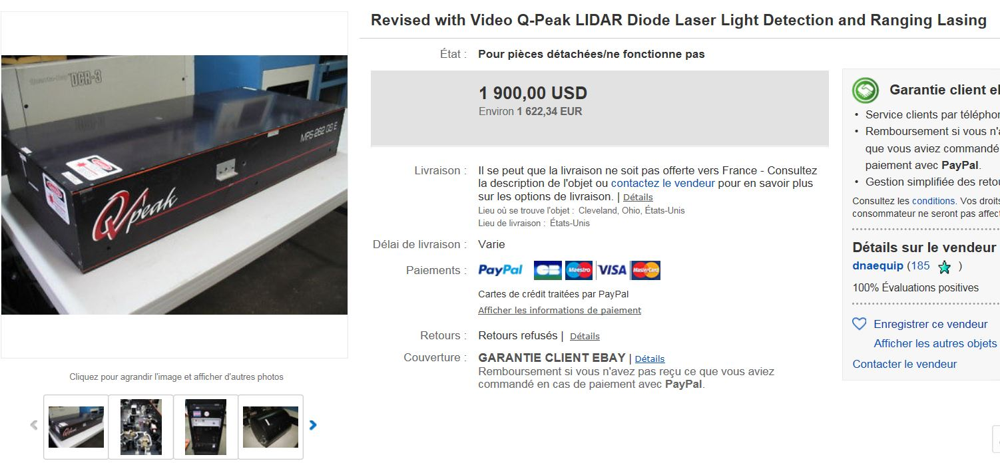
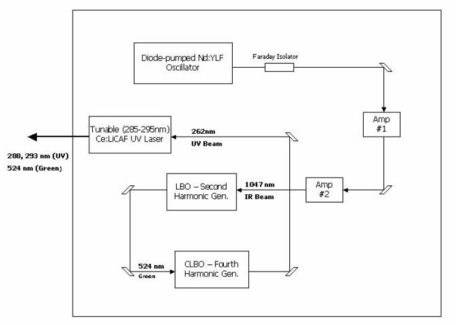
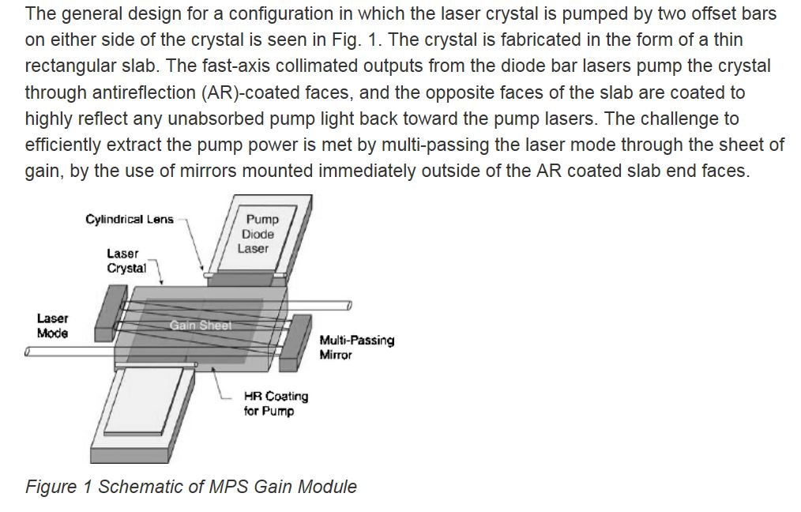
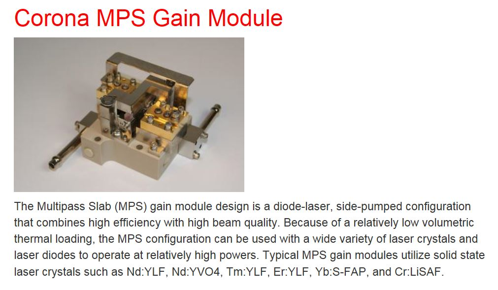

This tunable UV laser between 270 and 340nm uses a Ce: LiCAF crystal that is pumped by an Nd: YLF laser transposed by laser diodes.
It was used by NASA in the 2000s for measuring ozone in the troposphere and stratosphere.
It works in pulse mode at 1kHz with a pulse duration of 26 nanoseconds.
The pump laser is a Nd: YLF quadrupled in frequency by means of a doubler using a LBO with temperature control then again doubled by means of a crystal CLBO which generates the fourth harmonic at 262nm for the pumping of Ce: LiCAF.
This laser I bought on eBay for $ 1900 is less than 1% of the real price.
It will allow me to familiarize myself with a relatively complex system and for applications requiring UV between 267 and 330nm.

Module containing the CLBO doubler and the Ce: LiCAF crystal mounted on a cooled turret.
A LiF dispersion prism and a mirror mounted on a vertical axis of rotation makes it possible to choose the quiescence frequency between 270 and 340 nm.
Ce: LiCAF has an absorption of the 4f-5d transition with a line width of 3000cm -1 centered at 37000cm -1 .
The saturation fluence is 115 mJ / cm 2 , which allows femtosecond emissions to be carried out and used in multi-pass amplifiers because the fluorescence duration is 30 ns.
The pump fluence is 0.3J / cm2.
The pump laser consists of an oscillator triggered by means of a pockel cell allowing to generate pulses of some microjoules at 1kHz.
These pulses pass through a Faraday isolator to prevent the feedback of the 2 amplifiers from destroying the oscillator crystal.
Then, the beam passes through 2 multi-pass pumping amplifiers (Q-peak patent).
At the output of the 2nd amplifier, the beam has the following characteristics: pulse energy 1.4mJ, duration 26ns, TEM00, repetition frequency 1kHz, wavelength 1047nm.
This beam enters a thermostatic cell containing a crystal LBO (Lithium Beta Borate) at the output we obtain the second harmonic is 524nm (green) with a conversion efficiency of 17%. Then this green beam is sent to another cell containing this time a crystal CLBO (Cesium Lithium Borate) to work from the 3rd to the 5th harmonic 355 to 213nm.



here is the oscillator module pumped transversely by 2 100w qcw laser diodes.